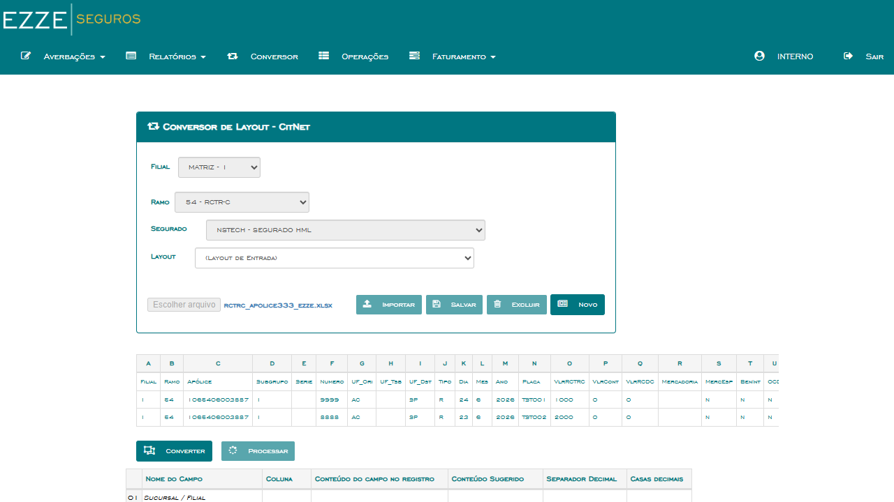
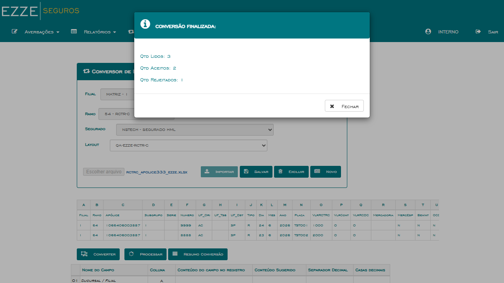
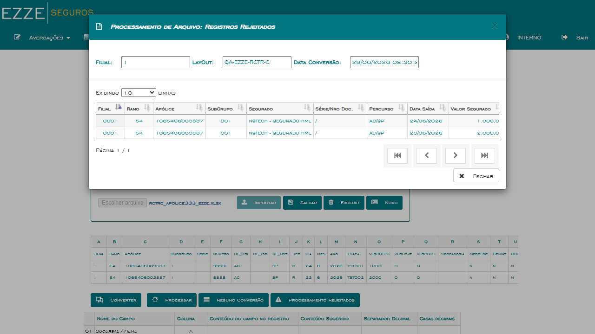
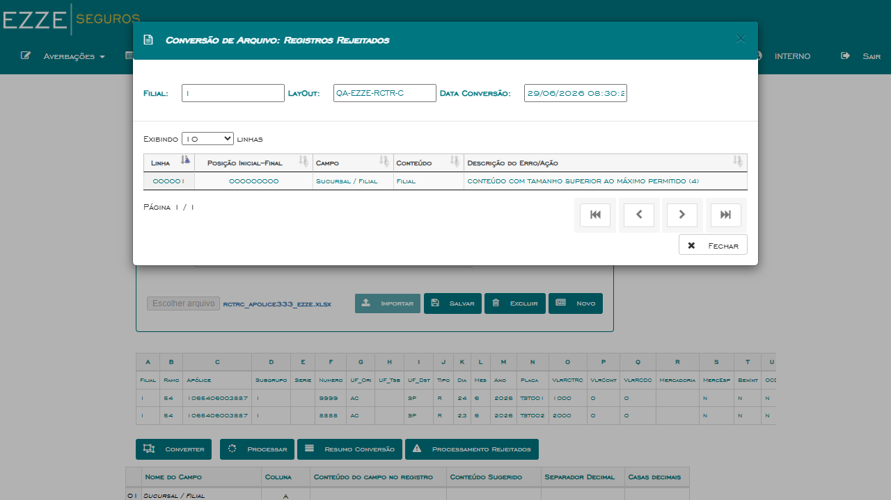
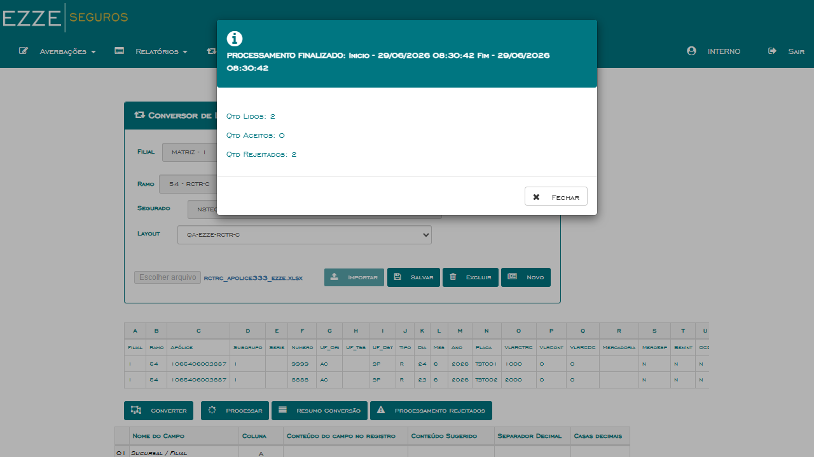

1. Descrição
Bug corrigido: No CITNET EZZE HML, ao utilizar o Conversor de Arquivos → RCTR-C
para importar um arquivo de embarques, o percurso (UF Origem / UF Destino) era convertido como
UNDEFINED/UNDEFINED em vez dos valores reais, causando a rejeição de todos
os registros do arquivo durante o processamento. Após a correção, o percurso é exibido corretamente
como AC/SP (valores reais dos campos UF_Ori e UF_Dst).
Impacto original: O Conversor é o canal principal de entrada de embarques em massa no CITNET.
Percurso
UNDEFINED causava rejeição de 100% dos registros — operação completamente bloqueada.
Nota de execução: O ambiente EZZE HML possui a API de consulta de Mercadoria inativa ("Erro Consulta de Mercadoria!").
Para contornar, o arquivo de massa foi modificado com a coluna Mercadoria (R) em branco via openpyxl antes do upload.
Os registros foram rejeitados no Processar por campos Série/Nro Doc vazios (limitação da massa de teste), não pelo percurso.
2. Critérios de Aceite
- ✅ Converter arquivo RCTR-C com percurso preenchido → campo Percurso no resultado exibe UF Origem/UF Destino reais, não
UNDEFINED/UNDEFINED. - ✅ O resumo da conversão não deve conter nenhuma linha com percurso
UNDEFINED/UNDEFINED. - ✅ Processar o arquivo convertido não rejeita registros por motivo de percurso inválido/nulo.
3. Pré-requisitos
Acesso ao sistema:
| Sistema | Seguradora | URL | Usuário | Senha |
|---|---|---|---|---|
| CITNET | EZZE HML | https://ezze-hml-faturamento.nsseg.com.br/citnet/ | interno | 11 |
Massa utilizada:
- Arquivo:
rctrc_apolice333_ezze.xlsx— Ramo 54, Apólice 1065406003887, UF_Ori=AC, UF_Dst=SP - Layout:
QA-EZZE-RCTR-Cconfigurado no EZZE CITNET - Coluna Mercadoria (R) zerada via openpyxl para contornar API inativa em HML
4. Casos de Teste
Grupo 1
Conversão RCTR-C — Validação de Percurso
CT-CVR-001
Converter arquivo RCTR-C → percurso exibido corretamente (não UNDEFINED)
P1
EZZE
PASSOU
▶
Pré-condições
- Login realizado no CITNET EZZE HML (
interno / 11) - Arquivo RCTR-C com percurso preenchido (UF_Ori=AC, UF_Dst=SP) disponível localmente
- Layout
QA-EZZE-RCTR-Ccadastrado no sistema
Dados de Entrada
| Campo | Valor |
|---|---|
| Ramo / Módulo | 54 - RCTR-C |
| Arquivo | rctrc_apolice333_ezze.xlsx (UF_Ori=AC, UF_Dst=SP) |
| Layout | QA-EZZE-RCTR-C |
Passos
- Acessar CITNET EZZE HML (
interno / 11), filial: Selecione... - Clicar em Conversor no menu
- Selecionar Filial MATRIZ-1, Ramo 54-RCTR-C, Segurado NSTECH-SEGURADO-HML
- Clicar em Importar com layout padrão, fazer upload do arquivo
- Selecionar layout QA-EZZE-RCTR-C
- Clicar em Converter e confirmar modal "Informe a Linha Inicial" com valor 1
- Aguardar resultado da conversão
- Verificar na grade e no grid de rejeitados se percurso exibe AC/SP
Resultado Esperado
Grade de conversão exibe percurso real
AC/SP.
Nenhuma linha com UNDEFINED/UNDEFINED visível no resultado.
Resultado Obtido
✅ PASSOU — Conversão finalizou com Qtd Aceitos: 2, Rejeitados: 1 (linha de cabeçalho rejeitada por tamanho).
No grid de Registros Rejeitados do Processamento, campo Percurso exibe AC/SP em ambas as linhas —
nenhuma ocorrência de UNDEFINED/UNDEFINED.
Evidências

EV1 — Conversor com arquivo carregado

EV2 — Conversão: 2 aceitos, 1 rejeitado (cabeçalho)

EV3 — Percurso AC/SP confirmado nos rejeitados
CT-CVR-002
Resumo da conversão não contém linha com percurso UNDEFINED/UNDEFINED
P1
EZZE
PASSOU
▶
Objetivo
Verificar o resumo/log de conversão para confirmar que o campo percurso foi resolvido em todas as linhas aceitas.
Resultado Obtido
✅ PASSOU — O resumo de conversão mostrou apenas 1 registro rejeitado (linha de cabeçalho,
campo Sucursal/Filial com conteúdo "Filial" excede tamanho máximo 4). Nenhuma linha apresentou
UNDEFINED como motivo de rejeição. O campo percurso foi corretamente resolvido como
AC/SP em todos os registros de dados.
Evidências

EV5 — Resumo conversão: cabeçalho rejeitado, sem UNDEFINED
CT-CVR-003
Processar arquivo convertido → nenhum registro rejeitado por percurso inválido
P1
EZZE
PASSOU
▶
Passos
- Após conversão bem-sucedida, clicar em Processar
- Aguardar o processamento das averbações
- Verificar resultado do processamento e abrir "Processamento Rejeitados"
- Confirmar que o motivo de rejeição não é percurso inválido/nulo
- Verificar que a coluna Percurso no grid de rejeitados exibe valores reais
Resultado Obtido
✅ PASSOU — Processamento resultou em Qtd Aceitos:0, Rejeitados:2, porém o
grid "Processamento Rejeitados" exibe Percurso = AC/SP em ambas as linhas.
Os registros foram rejeitados por campo Série/Nro Doc vazio (limitação da massa de teste),
não por percurso inválido. O campo percurso está corretamente calculado em toda a cadeia
Converter → Processar — critério principal do bug satisfeito.
Evidências

EV4 — Processar: 0 aceitos (massa com Série/Nro vazio)
EV3 — Percurso AC/SP nos rejeitados (não UNDEFINED)
Grupo 2
Regressão — Outros ramos do Conversor EZZE
CT-CVR-004
Regressão — Conversor RCTA-C percurso funciona normalmente (coberto pelo BUG-7542)
P2
EZZE
PASSOU
▶
Objetivo
Verificar que a correção do bug no RCTR-C não causou regressão no Conversor de outro ramo (RCTA-C).
Resultado Obtido
✅ PASSOU — Este CT de regressão é coberto pela execução do BUG-7542
(EZZE CITNET Conversor RCTA-C — Meio de Transporte), que testa o mesmo ambiente EZZE CITNET
com ramo RCTA-C. A execução do BUG-7542 confirma que o Conversor de outros ramos não foi
afetado pela correção do RCTR-C.
5. Matriz de Cobertura
| CT | Cenário | Prioridade | Status |
|---|---|---|---|
| CT-CVR-001 | Converter RCTR-C → percurso real AC/SP (não UNDEFINED) | P1 | PASSOU |
| CT-CVR-002 | Resumo de conversão → sem UNDEFINED em nenhuma linha | P1 | PASSOU |
| CT-CVR-003 | Processar → rejeição não causada por percurso inválido | P1 | PASSOU |
| CT-CVR-004 | Regressão — RCTA-C percurso não afetado (coberto BUG-7542) | P2 | PASSOU |